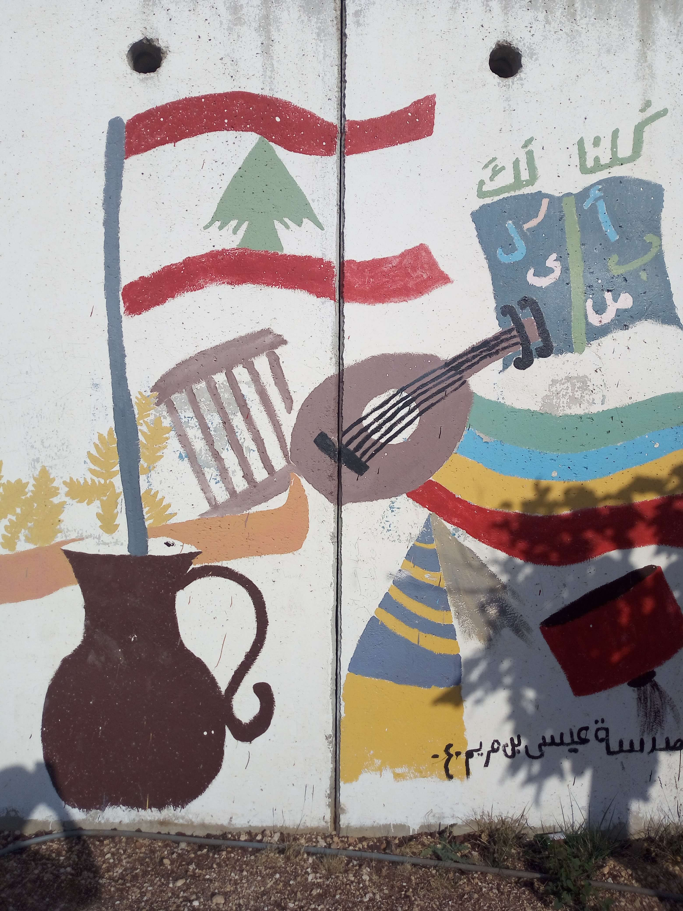

Lebanon–Israel Border
Located in southern Lebanon, the area along the Lebanon–Israel border offers a distinctive landscape of hills, open views, and rural surroundings. Its geographical setting provides a different perspective on this part of the country and its natural environment.
During my visit, I had the opportunity to explore the area, take in the surrounding scenery, and experience the atmosphere of this distinctive part of Lebanon. These photographs capture my personal impressions of the Lebanon–Israel border area as part of my travels through Lebanon.
My Photo Gallery
Explore my personal travel photographs capturing the landscapes, views, and surroundings of the Lebanon–Israel border area.
View All Photos ↗